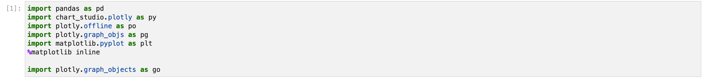

4. Dashboarding: Is there life after graduate school?
In this project, a informative dashboard visulization about data of science and engineering PhDs awarded in the US is created using Python in a Jupyter notebook to show few interesting insights of the data.
Creat Visulization
STEP 1: Package Installation
For this assignment, I use Plotly to create an interactive dashboard where users can customize features like buttons, sliders, and dropdowns to display different perspectives of graphs. The dash features of Plotly also helps to create web applications backed up by Flask, Plotly.js, and React.js in a straightforward way.
STEP 2: Creat four functions with customizable inputs and graph outputs
Plot1: Number of doctorate recipients by States: 2017
This graph returns a geo-location graph of the number of doctorate recipients in each States in the year of 2017. <\p>
Plot2: Average Number of doctorate recipients by Field of Study After Year Selected
With an input of year variable. This graph returns a bar graph of the average number of doctorate recipients in each field of study since the year selected<\p>
Plot3: Median Number of doctorate recipients per Institution: 1987 - 2017
With an input of year variable. This graph returns a line graph of Median Number of doctorate recipients Per Institution Since Year Selected<\p>

Plot4: Median Years To Doctorate Since Selected Year: 1992–2017
With an input of year variable. This graph returns a line graph of Median Years To Doctorate Since Selected Year, both from bachelor and from graduate school<\p>
Build The Dashboard
STEP 3: Set dash web application framework to place the visuals and dropbar
STEP 4: Run the app using pre-defined functions and inputs